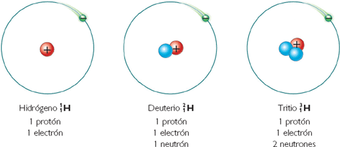

Estos son isotopos del elemento fundamental y mas abundante del universo, el hidrogeno. El tritio difiere del hidrogeno en que tiene tres neutrones en vez de 1. Este elemento se obtiene cuando los rayos de radiacion cosmica hacen efecto sobre la atmosfera, aunque se puede sintetizar de manera artificial El deuterio no se fabrica de manera natural, aunque es bastante facil sintetizarlo en los labortarios
